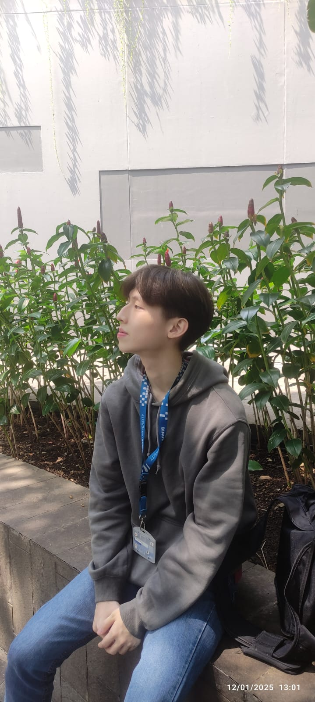

Building ideas into intelligent experiences.
I’m James Tiono, a Computer Science student at BINUS University. I turn raw data into models, analyses and products that people can use, and every figure on this page names the file it came from.
- Projects
- 8
- Disciplines
- 5
- Sourced findings
- 58
- Credentials on file
- 9
Raw data rarely answers anything on its own. Scraped articles, clinical records and simulated traffic only become useful once they are cleaned, modelled and put in front of the person who has to decide.
- Scraped news articles
- 5,995 articles
- data/processed/corpus_build_report.csv
- Clinical encounters
- 7,675,801
- test1.ipynb
- Held-out traffic simulations
- 100 episodes
- results/eval/final_test_summary_table.csv
About

I study Computer Science at BINUS University and work across data analytics, machine learning and application development. I prefer projects that end in something usable: a model behind an app, an analysis that changes a decision, a tool a group opens from one link. Most of my work starts as a question I can’t answer yet and ends as a figure I can point to, together with the notebook or result file that produced it.
- Studying
- B.S. Computer Science, BINUS University
- Works in
- Data analytics, machine learning, deep learning, text mining and app development
- Tools
- Python, pandas, SQL, scikit-learn, PyTorch, MLflow, Streamlit, Next.js, TypeScript, Supabase, Unity with C#, and Figma
“Curiosity inspires idea, learning builds skill, and action turns it into impact.”
Work
Eight projects across five disciplines. Each one ends with the findings that came out of it, and every finding names the notebook, result file or page it was read from.
Credentials
Certificates and records on file, with the issuer, date and ID exactly as printed. Where a provider offers public verification, the link goes straight to it.